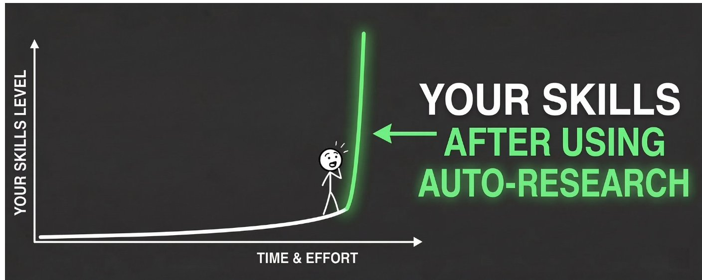
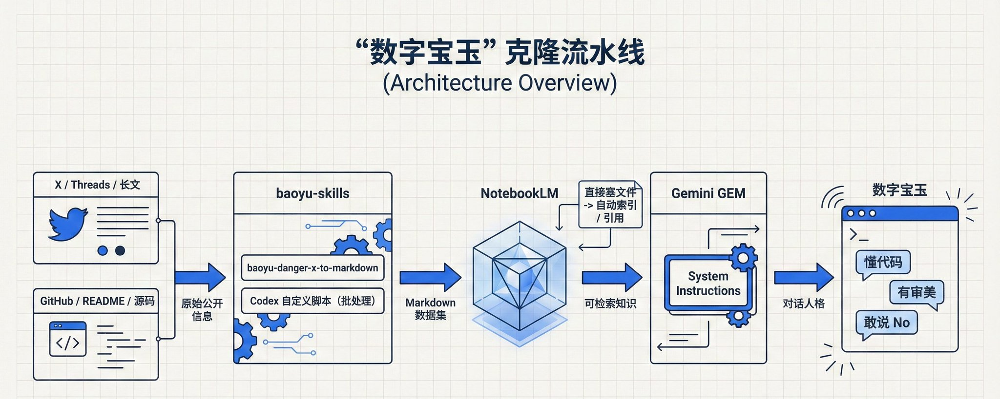
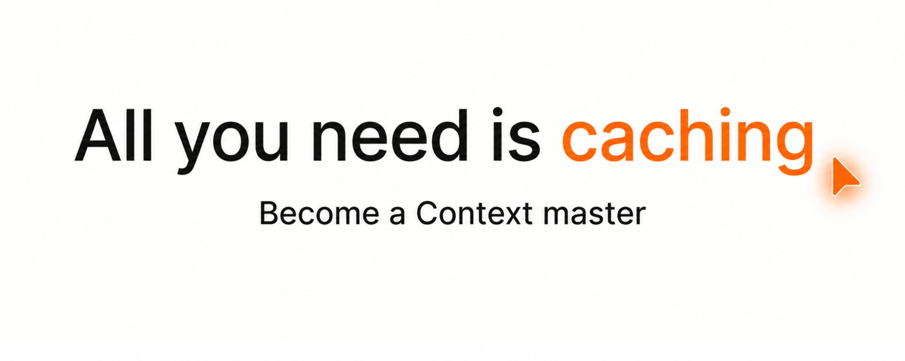
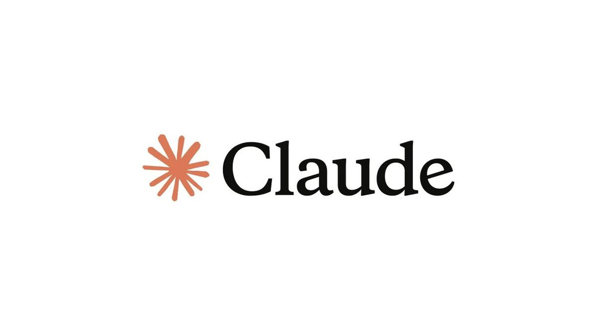
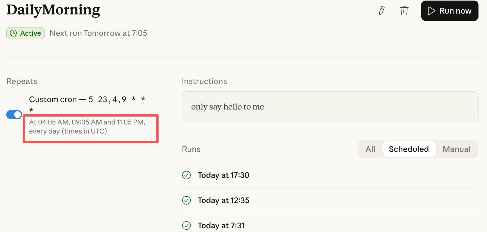
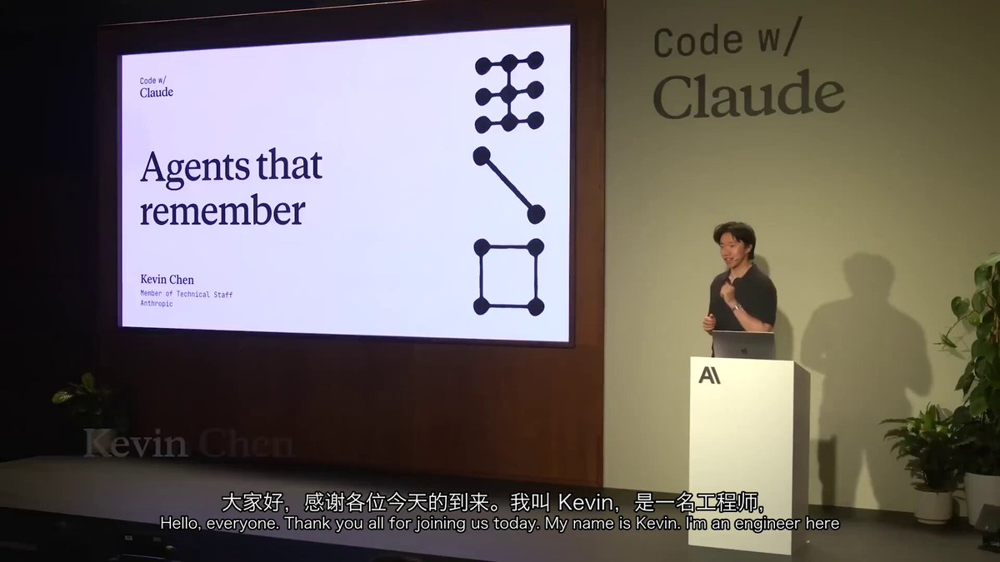
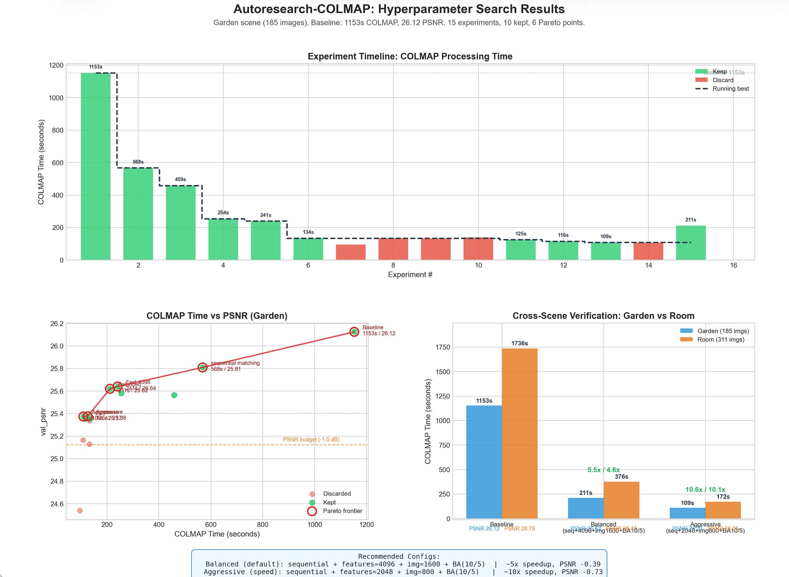
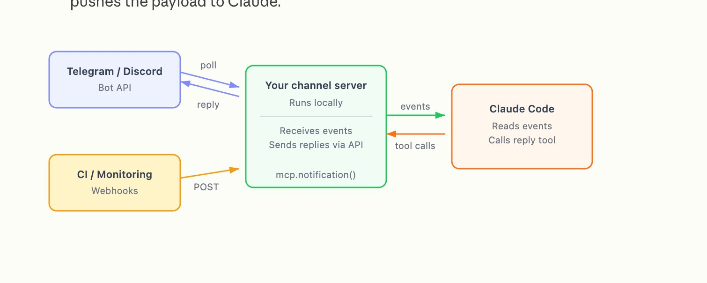
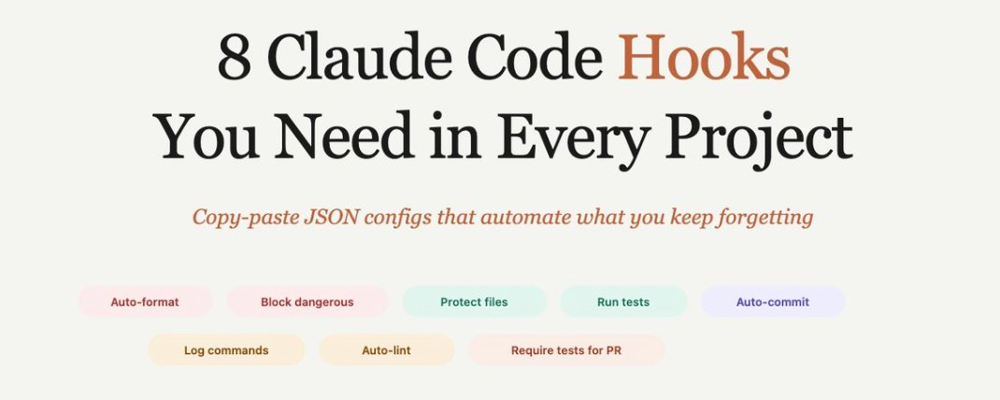

内容立场
不做 PPT 式展望。只分享自己踩过坑、验证过的一手路径。
Claude、Codex、Grok、Gemini 和开源模型，一出来就自己上手测。文章里的截图、数字和结论，都是在自己机器上一条条跑出来的。
// 合作 接产品测评和品牌合作。产品我自己装、自己用，用完照实写。
已合作 Qwen · 飞书 · 豆包 · 蚂蚁百灵 · Bitget … 全部 13 个 →AI Builder，超级个体。在信息噪音里只做一件事：把 Claude、Codex、Grok、Gemini 和开源模型压成可复制的日常操作。 从缓存和额度，到本地部署、生图模型实测、Agent 工作流—— 能跑通、能复现、能马上用，才值得发出来。数字都来自自己的卡。
不做 PPT 式展望。只分享自己踩过坑、验证过的一手路径。
重度 AI 使用者、独立开发者、想把开源模型跑在自己机器上的人，以及要把模型塞进真实工作流的团队。
模型一出来就上手测。高密度短帖 + 可收藏长文，热点快评和硬核实测都有。
2× RTX 4090 48G DGX Spark 12GB 显存
2026 年 2 月以来，阅读超过 5 万的 38 篇，累计 8.2M 阅读。数据取自 X，2026-10-09 快照。站内有全文的在站内打开，其余跳到 X 原帖。

上线之前安全边界到底在哪。375 张生成和编辑测试，模型没有稳定拒绝，检测器自己先翻车。

$20 账号干出 $200 的活：让 NotebookLM 当老师存语料做检索，Claude 当助手只做推理和编排。47 篇论文实测 5 轮研究会话贵档 token 只花 $0.55，比塞 prompt 便宜 17 倍。

同一段对话为什么有时 30 秒有时 0.2 秒？从本地 Gemma 4 实验讲到 Transformer KV 缓存原理，再逆向 Claude Code 源码看 Anthropic 的缓存工程——理解前缀匹配和 TTL，同样的套餐能多干 3-5 倍的活。

一张 48GB 4090，16 小时，纯 GPU 约 2.5 小时。强在中文排版、原生透明和多图身份保持，弱在「替换」语义。

Karpathy 的 autoresearch 方法拆解：让 Claude 先自我研究、生成评测基准，再迭代你的 Skill，把已经能用的 Skills 效果再提升 10 倍。505K 阅读爆款译文，附实践哥导读。
我想请硅谷顶级哲人纳瓦尔 (@naval) 做我的 24 小时人生教练，但他太贵，也没空理我。
我用Claude Code一个下午烧完extra credit 200刀，然后账号没了。

两台偏科的机器，Dense 的 Qwen3.8-27B 和 MoE 的 Ling-3.0-flash，四个组合全测了一遍。一个人用和几十个人用，结论不一样。

我想请宝玉 ( @dotey ) 做我的 24小时 AI首席顾问，但他太忙了。 所以我干了一件很 Geek 的事：用宝玉skills抓取宝玉的公开数据，用NotebookLM打造他的大脑，在 Gemini 里用GEM克隆了一个拥有他…

家里的 Qwen 27B 不再只活在终端里。手机点进 UU 远程，tmux 会话原样在，并开源了 uu-term-bridge。
突然发现之前折腾什么Tailscale+tmux，claude remotion，codex远程全他妈浪费时间。

Claude Code 能即时写出为任务量身定制的编排脚本，在单个会话里跑数十到数百个并行 subagent。译自 Anthropic 员工 Thariq 的长文，附实践哥导读批注。
有没有人跟我一样？ Claude Code 5小时重置一次，并以当天第一次使用开始计算周期。 我会使用crontab每天早上7:01定时用Haiku发一句“早安”。 这样一来，每5小时重置…

做一根 6cm 的粉色活动香蕉。它自己用 Blender 建模、看结果、修，吐出 STL，打印机一层一层长出来。

五个位置：形象、声音、口型、内容、环境。本地链路是 VoiceBox / Qwen TTS 加 MuseTalk。营销链路是飞书里的豆包，选题和主播库进多维表格，Seedance 音画同出。

和 Claude Code 聊了半小时，调教好了上下文。偏偏这时你想试个更狠的改法，或者冒出个岔路问题想顺嘴问一句。非常难堪，当前窗口直接动手，主线被带跑、上下文越搅越乱；新开一个 claude，它干干净净啥都不知道，半小时的铺垫得从头…
vivek @itsreallyvivek 如何做好研究（how to be good at research） 并没有人真正教过你如何做研究。你得到一张办公桌、一个别人挑好的问题，以及一个“做出点新东西”的模糊指令。因此，大多数人通过…
我花了两周, 研究了 30 多个不出镜、不写 thread、不发自拍的泛流量博主。

人类能达到的满级 prompt 能力，值得学习。经常听说降维打击，这次来看看怎么用 Claude 做升维打击的，从浓缩数据里挖出隐藏的关键细节信息。

免费模型会过期。让 Muse 每天自己找到新的，一条命令接上。发布第二天，书签已经 624。
我每次要把 MD 草稿排版到公众号，手动调样式 30 ～120分钟一篇。这种中频场景，非常适合做一个 Skill 。

一年两个月没被封。订阅区、网络、账单地址和卡放在同一个国家。后半篇是一张国内护照能办的新加坡卡，含 Starryblu 合作。

花一分钟设置，利用Claude Code 5小时重置一次的机制，让你每天9～12点，午休后14～17点，17～下班前从容不迫使用容量100%的token window。

Anthropic的工程师Kevin的一个分享。 价值$1000 刀，关于agent memory的workshop。 这将是 AI memory的主流，提前一年了解它，成为记忆专家。

系列第一篇，先不做数字人。HTML、本地 TTS、Whisper、Playwright、ffmpeg 五个角色自己接，跑通以后收成 skill。

Strata 让 GPU、CPU、RAM、SSD 一起干活。部署本身交给 Ling-3.1-flash，从读文档到测速验收没有断。
你有没有那种每月固定要花两小时做、但又毫无意义、做完毫无成就感的事？比如整理发票？
剪映的自动字幕要充会员，一年 ¥599。钱掏了，识别也就七成准：专有名词全错、语速一快整句漏掉、错别字一串，剩下的还得你一条条对着时间轴手补。花了钱，活还得自己干一半。
不要用它写简单代码：从最难的 backlog 开始、花在架构与核心抽象上、把每月重复的事拆成 skill、让 Fable 当老师小模型当学生——7 条把 Fable 价值最大化的实操用法。
Gemini Pro 3.1 刚刚更新，我对它史诗级加强的 Canvas 功能爱不释手。刚好周末准备带五年级的儿子去天文馆，我决定不翻科普书，也不给他用豆包，我准备用Gemini Pro 3.1可视化概念验证。
OpenAI Codex CLI 最近出了个 /goal 命令，给一个任务指标，它一轮一轮自己往前推，直到指标完成。
Nano Banana 2 又快、又好、又省、又听话、又能出多图，功能强大。宝玉老师做过 baoyu-article illstrator skills 的神级工具，专门给程序员用。装在 Claude Code 里，命令行调用，全自动给…

最近我用 autoresearch 方法论干 3 件事： 第一做实验 第二写文章 第三改进我的 skill
最近一周，一个3D 细胞教学Demo病毒式传播。好几个博主说"我也复刻了一个"，但他们只给代码或只贴视频。怪事，没有一个人公布复刻方法。
你有没有好奇过，为什么有些博主能源源不断输出爆文？他们每周都能稳定产出几篇看起来就想转发的稿子，节奏完全不像人能维持的。
最近 AI 圈子风控趋严，各大厂商大规模封杀违规调用的 账号。那些依赖第三方代理或使用 OpenClaw的账号纷纷中招。

朋友圈、知乎、B站，全是教程和截图。什么"AI帮我打工了""自动处理邮件""出门旅游AI替我上班"。

瞄了一眼 git diff，发现 Claude 把我的 .env 改了。加了一行调试变量。本身没啥——但我当时连着生产库。
13 个品牌，商单累计曝光 2M+。
接 AI 工具、开发者产品和效率软件。产品我自己装上用，用完再写。
深度上手 + 优缺点直说。适合 Claude / Codex 生态、Agent 平台、远程开发与算力工具。
可收藏的操作贴：步骤清晰、可复现。适合需要「教用户怎么用」的增长场景。
月度内容包、系列实测、社群联动，按月持续出内容。
工具选型、工作流答疑、闭门分享。要整套落地？看 Agent 搭建 & 培训 →
产品链接 + 形式 + 预算区间，工作日 24–48h 内回复。
确认角度、交付物与排期。不合适会直说，不浪费彼此时间。
深度体验后产出内容，关键信息发布前与你确认。
按排期发布，同步阅读 / 互动 / 书签等真实数据。
发帖之外的另一条线：帮企业把 Agent 从想法搭到上线，再把团队教会。交付的是能进业务的系统。
客服、获客、内容、数据分析 Agent 都搭过；天天泡在 Claude / Codex / Grok / Gemini 和开源模型一线， 更懂 AI 落地的真实痛点——您提需求，方案我来。
接上业务知识库：自动应答、工单分流、复杂问题转人工。
线索收集、筛选、触达与跟进自动化，销售只接热线索。
从选题、成稿到多平台分发，一条流水线批量出内容。
自然语言查数、自动出报表，业务同学不再排队等取数。
一家跨境电商团队，选品和报表两条流程全靠人工。拆完需求后交付了两套可独立运行的本地工具： 一套自动跑选品筛选，一套把杂乱的平台报表转成能直接用的表。 使用的是完全不写代码的运营同事——双击图标就能跑， 数据全程留在本机，不上传、不出内网。
交付前开了三个 Agent 并行交叉评审代码（工程 / 测试 / 体验三个视角）， 互不通气却独立指向同一批隐患，修完才上线。这也是我做交付的默认流程。
品牌方 / 产品方 / 企业团队 / 代理：发一封简短说明即可。 建议包含产品链接、合作形式、预算区间、期望时间，我会尽快回复。